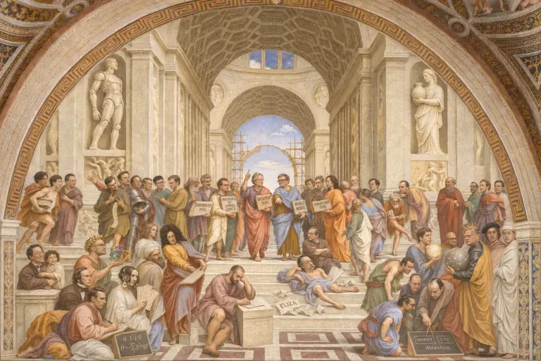

⟷
AI · 2026

The School of Athens · MMXXVI
拉斐尔在梵蒂冈签字厅画下《雅典学院》（1509–1511），让古希腊各个学派站在同一座殿堂里。正中两人的手势是全画的轴心：柏拉图指天，亚里士多德按地。
这幅画保留了原作的构图，把人物换成人工智能七十年里的人。中央两人仍是那两种手势，只是争论换了题目——最早是符号与连接之争，如今是同一阵营里关于风险与路线的分歧：指天的辛顿警惕可能超越人类的智能，按地的杨立昆坚持智能要从物理世界中学会。
画面左侧是起源与提问，中央是当下的分歧，右侧是建造者与产业。最远的拱门还搭着脚手架。右下角原本是拉斐尔的自画像——这幅画由 AI 画成，那个位置就留给了它，一位还没画完自己的画家；它身旁站着另一位作者。
人物的位置与动作是艺术再创作，依据公开资料，不代表本人立场或评价。
构思、文字与代码：Claude
画面：ChatGPT
原作：拉斐尔《雅典学院》，公有领域，图源维基共享资源
Raffaello · 1511 ／ 2026
拉斐尔画了五十八位哲人。
这一次，殿堂里站着人工智能的七十年。